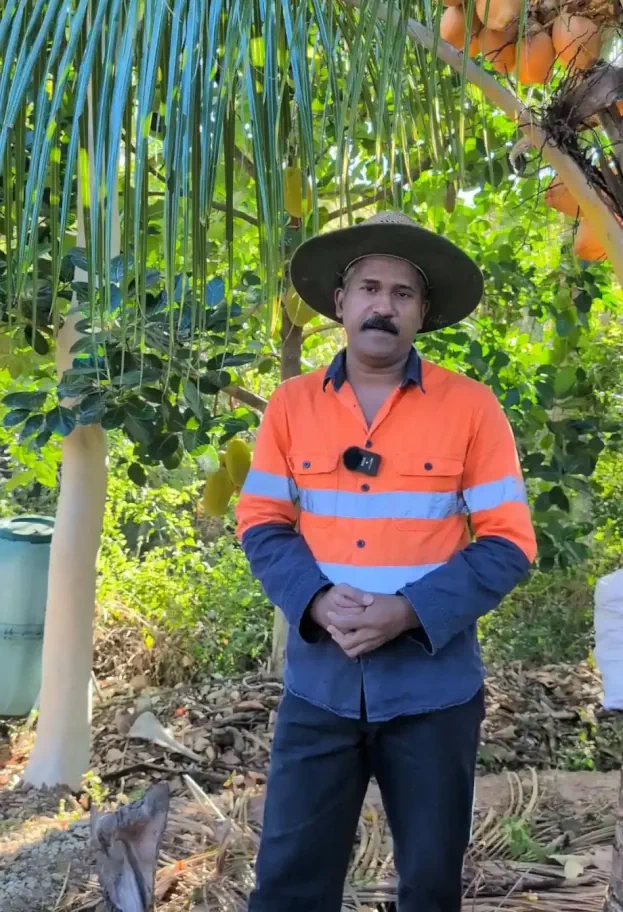
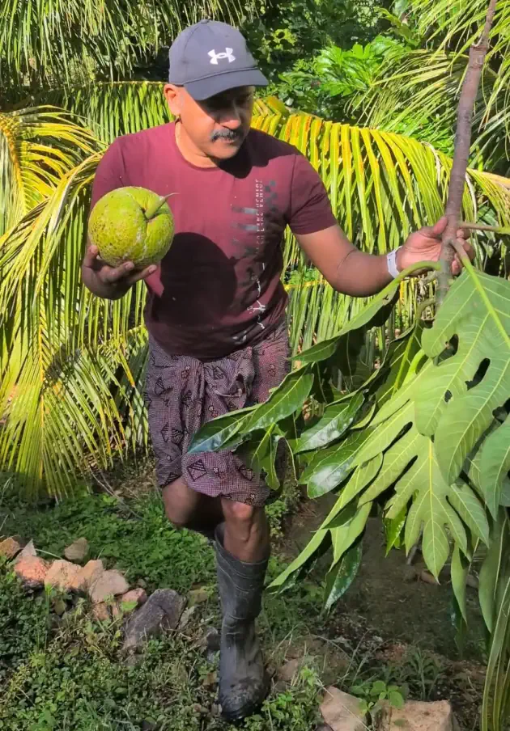

New
ഓസ്ട്രേലിയയിൽ മുരിങ്ങ നിരോധിച്ചതിൻ്റെ കാരണം അറിയണോ?
ഓസ്ട്രേലിയയിൽ ഇനി മുതൽ മുരിങ്ങ പ്രോഡക്ട്സുകൾ ഫുഡ് ഐറ്റം ആയോ ഫുഡ് ingredient ആയോ വിൽക്കാൻ സാധിക്കുകയില്ല.
Welcome to Australian Jeevitham — the journey of a Malayali vlogger in Australia. Join us as we explore beautiful places, share local news, and discuss job opportunities, everyday life, and culture for Malayalis Down Under. ഓസ്ട്രേലിയയിലെ ഒരു സാദാരണ മലയാളിയുടെ ജീവിതം എന്താണ് എന്ന് ഈ ചാനലിലൂടെ നിങ്ങൾക്ക് കാണിച്ചു തരുന്നു. കൃഷിയെ ഇഷ്ടപെടുന്ന ഞാൻ എൻ്റെ ജോലി സമയം കഴിഞ്ഞു ഉണ്ടാക്കിയ ചെറിയ ഒരു അടുക്കള തോട്ടം ആണ് എൻ്റെ വീഡിയോയുടെ ഉള്ളടക്കം. പിന്നെ ഓസ്ട്രേലിയയിലെ ജോലികളെപ്പറ്റിയും, എങ്ങനെ ഓസ്ട്രേലിയയിൽ വരാൻ സാധിക്കും എന്നതിനെപ്പറ്റിയും ഇടക്കിടക്ക് വീഡിയോ ഇടാറുണ്ട്.
▶ Watch on YouTube ▶ Watch on Instagram
ആകസ്മികമായി തുടങ്ങി, പക്ഷെ...
ഓസ്ട്രേലിയൻ ജീവിതം എന്ന സോഷ്യൽ മീഡിയ ചാനൽ തുടങ്ങിയത് ആകസ്മികമായിട്ടാണെങ്കിലും, പിന്നീട് അത് തുടരാൻ എന്നെ പ്രേരിപ്പിച്ച കാരണം ഇതാണ്: ഒരിക്കലും ഓസ്ട്രേലിയയിൽ വരാൻ സാധിക്കാത്ത അനവധി മലയാളികൾക്ക് ഇവിടുത്തെ വിശേഷങ്ങൾ നേരിട്ട് കാണുവാനുള്ള ഒരു അവസരമൊരുക്കുക. അതോടൊപ്പം, ഓസ്ട്രേലിയയിലെ യഥാർത്ഥ ജോലിസാധ്യതകളെക്കുറിച്ചും മറ്റ് പ്രധാന കാര്യങ്ങളെക്കുറിച്ചും തികച്ചും വിശ്വസനീയമായ (genuine) വിവരങ്ങൾ പങ്കുവെക്കുക.

ഓസ്ട്രേലിയയിൽ ഇനി മുതൽ മുരിങ്ങ പ്രോഡക്ട്സുകൾ ഫുഡ് ഐറ്റം ആയോ ഫുഡ് ingredient ആയോ വിൽക്കാൻ സാധിക്കുകയില്ല.
ഓസ്ട്രേലിയയിലെ കേരള സ്റ്റൈൽ കൃഷിത്തോട്ടം
വെറുതെ ഒരു രസത്തിനു ട്രൈ ചെയ്തതാണ്.
ഓസ്ട്രേലിയയിലെ ജോലി സാധ്യതകളും എങ്ങനെ ഇങ്ങോട്ടു വരാം എന്നതിനെപ്പറ്റിയുള്ള വിവരങ്ങൾ
Government job boards for every state and territory, plus SEEK for the private sector.
Visa routes, personal experience, and where to find a MARA-registered migration agent.
From the Great Barrier Reef to Uluru — where to go on a weekend off.